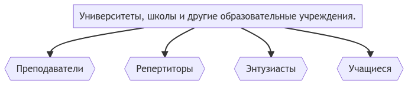
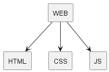

Created: 2022-11-27 Sun 19:45
к примеру автоматическое тестирование задач по программированию


Преимущества перед другими аналогами: в современности интерфейса, больших возможностях и сотрудничество с конечным потребителем.
Нет системы, которая обеспечивает подобный функционал и при правильном позиционировании, можно добиться огромного спроса с множества образовательных мероприятиях
Как было сказано, выше, сильных конкурентов мало или их нет.
Нужна поддержка образовательных организаций от правительства.
Не влияют
При развитии компьютеров, наша система может развиваться лучше и работать быстрее, без сильных трудозатрат на оптимизацию.
Количество учащейся части населения влияет на распрастранение нашей программы.
Не влияют
Может влиять в негативную, сторону, из-за неэкологичном производстве компьютеров и их составляющих.
Наша IT, компания довольно небольшая, но при этом обладает, хоть небольшиим, но очень дружным и приятным коллективом.
Так как мы не произоводим, реальный продукт, а цифровой, производство этого продукта, оценивается, лишь стоимостью наших компьютеров.
Мы имеем некий стартовый капитал, для начала проектов, но требуем поддержки со стороны инвесторов.
Мы пользуемся системой разработки Confluence Jira, которая включает в себя такие понятия как Agile и Kanban, а также разрабатываем на последней версии ядра Linux и языка программирования Kotlin.
Мы разрабатываем очень стабильные и быстроразвивающиеся приложения, которые помогают людям во всей стране.
Работа IT-компании pank.su, способствует развитию образования в нашей стране.
– Гайкин Кирилл, будущий министр образования.